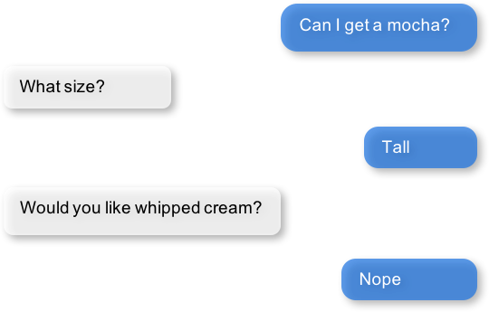
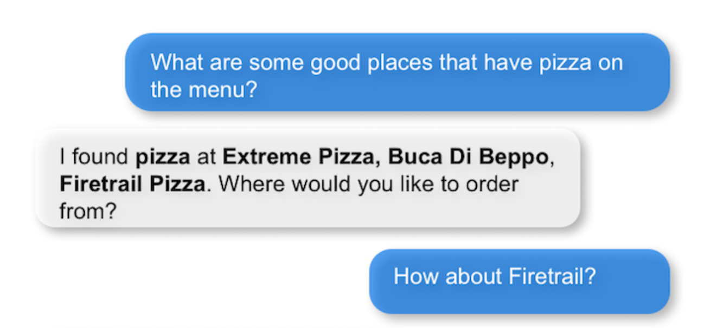

Working with the Dialogue Manager¶
The Dialogue Manager
- manages the conversational aspect of a mindmeld application
- uses pattern-based rules to determine the dialogue state for each incoming request
- implements handlers which execute business logic and return a natural language response to the user
Developing a dialogue manager can be a daunting task for all but the simplest conversational apps. MindMeld mitigates the challenge by providing a pattern-matching system and helpers for generating responses.
Note
This is an in-depth tutorial to work through from start to finish. Before you begin, read the Step-by-Step Guide, paying special attention to the section about defining the Dialogue State Handlers.
Let's explore the main concepts you'll apply when you develop a dialogue manager in MindMeld: dialogue states, dialogue state rules, dialogue state handlers, targeted dialogue state handling, dialogue flows, and dialogue middleware.
Dialogue States¶
For every incoming request, the dialogue manager (DM) determines which dialogue state applies. When developing your application, you set up a system of rules to match requests to dialogue states, using a flexible syntax that MindMeld provides. Each dialogue state represents a task that the conversational agent can complete. Usually, you name the dialogue state for the task it represents, for example welcome or send_store_hours. Name the dialogue states from the conversational agent's perspective. (By contrast, you name intents from the user's perspective).
Each dialogue state has a handler which contains logic to fulfill a user's request or gather more information if necessary, and to generate a natural language response. Dialogue state rules and handlers are implemented in the application container.
Dialogue State Rules¶
Dialogue state rules match requests to dialogue states based on attributes of the request object, including the output from the natural language processor. Each rule specifies what to match, in the following form: exactly one domain, one intent, and a set of entity types. In single-domain apps the domain is omitted; in all apps, the entity types are optional. The exception to all this is the default state, which must match all requests, and therefore has neither domain, intent, nor entity types. The first state registered without a domain, intent, and entity types is the implicit default.
To better understand dialogue state rules, let's jump into the skeleton of a dialogue manager for an app that provides store hours.
from mindmeld import Application
app = Application(__name__)
@app.handle(domain='stores', intent='greet')
def welcome(request, responder):
pass
@app.handle(domain='stores', intent='exit')
def say_goodbye(request, responder):
pass
@app.handle(domain='stores', intent='get_store_hours')
def prompt_for_store(request, responder):
pass
@app.handle(domain='stores', intent='get_store_hours', has_entity='store_name')
def send_store_hours(request, responder):
pass
@app.handle(domain='stores', intent='unsupported')
@app.handle(domain='unknown')
def send_help(request, responder):
pass
@app.handle(targeted_only=True)
def confirm_store(request, responder):
pass
@app.handle(default=True)
def default(request, responder):
pass
if __name__ == '__main__':
app.cli()
This dialogue manager has seven dialogue states: welcome, say_goodbye, prompt_for_store, send_store_hours, send_help, confirm_store, and default.
In each state:
- There is a function whose name is the name of the state. This function defines the handler. (In the example,
passsubstitutes for detailed definitions, since we explain handlers in the next section.)- Rules are specified by decorating the handler with the
app.handle()method, whose parameters can includedomain,intent,has_entity,targeted_only, anddefault. To specify multiple entities, we would usehas_entities.
When the same combination of domain, intent, and entity types appears in both (a) the NLP result of a request and (b) a dialogue state rule, then the request satisfies (matches) the rule. A dialogue state can have multiple rules, and if any of them match the request, the dialogue handler responds.
Tie Breaking¶
The DM always resolves to exactly one dialogue state.
Rules are considered more or less specific according to what parameters they have:
- The least specific rule is one (like
defaultin the example above) without domain, intent, or entities- A rule with a domain has some specificity
- A rule with an intent is more specific
- A rule with entities is still more specific
- A rule with the most entities is the most specific
When a single request satisfies multiple rules, the DM chooses the most specific rule. If a request matches two requests with the same specificity, the DM chooses the rule that is registered earliest with an application. Rules for which targeted_only has been set True are excluded from consideration for matching as explained later in the section on "Targeted Dialogue State Handling". Passing default=True to the app.handle() decorator explicitly denotes that handler as the default state regardless of when it is registered with the application or the existence of any other handlers without rules.
Dialogue State Handlers¶
Dialogue state handlers are the functions invoked when a request matches a rule for the handler's corresponding dialogue state. MindMeld places no restrictions on the code within a handler. This is important because requirements differ for different applications, and developers must have the flexibility to organize code as they wish.
Dialogue state handlers take two arguments: request and responder.
request¶
request is an immutable Request object containing the contextual information needed to manage dialogues. You can use this information to fulfill user requests, determine additional information needed from the user, set the state for the next turn or to fill slots in your natural language templates.
| Attribute | Description |
|---|---|
frame |
Dictionary of stored data across multiple dialogue turns. You can set custom key, value pairs that can be tracked across multiple dialogue turns (not for use by front-end clients) |
params |
An immutable FrozenParams object containing parameters which modify
the way MindMeld processed the current turn. See schema of the params
object below. |
domain |
Domain of the current message as classified by the natural language processor |
intent |
Intent of the current message as classified by the natural language processor |
entities |
Entities in the current message, as recognized by the natural language processor |
history |
List of previous and current responder objects (de-serialized) upto the current conversation |
text |
The query text, as passed in the request |
confidences |
A dictionary of keys domains, intents, entities and roles
containing confidence probabilities across all labels for each classifier.
The entities and roles keys represent a list of confidence payload,
with each entry corresponding to the identically-indexed entity in the
top-level entities key. This attribute is populated when the verbose flag
is set to "True" in the incoming request. |
context |
A dictionary containing front-end client state that is passed to the application from the client in the request |
nbest_transcripts_text |
List of alternate n-best transcripts from an ASR system. |
nbest_transcripts_entities |
List of lists of extracted entities for each of the n-best transcripts |
nbest_aligned_entities |
List of lists of aligned entities for each of the n-best transcripts |
params¶
The params attribute of the request object is an immutable FrozenParams object that contains state information of how MindMeld processed the current turn.
| Attribute | Description |
|---|---|
allowed_intents |
A list of intents that you can set to force the language processor to choose from |
target_dialogue_state |
The name of the dialogue handler that you want to reach in the next turn |
time_zone |
The name of an IANA time zone, such as 'America/Los_Angeles', or 'Asia/Kolkata' |
timestamp |
A valid unix timestamp of type Long for the current query. The timestamp is accurate to the nearest second. |
dynamic_resource |
A dictionary containing data used to influence the language classifiers by adding resource data for the given turn (see dynamic gazetteer documentation) |
dialogue_flow |
The name of the current turn's dialogue flow state |
Note
The FrozenParams class has the same attributes tabulated above in the params table.
responder¶
The responder is a mutable object used to send actions, like templated natural language responses, to the client. The responder can also carry output state from the current handler's processing to MindMeld for next-turn's handling. It has attributes and methods listed below:
| Attribute | Description |
|---|---|
frame |
Dictionary of stored data across multiple dialogue turns. You can set custom key, value pairs that can be tracked across multiple dialogue turns (not for use by front-end clients) |
params |
A mutable Params object containing attributes which modify the way
MindMeld processes the next turn. Note that the Params class has the
exact same attributes as the FrozenParams class, except all the
attribute types are mutable compared to the frozen params (e.g. list vs tuple) |
dialogue_state |
The dialogue state name of the current turn |
slots |
A dictionary containing key, value pairs used to fill NLR responses |
history |
List of previous and current responder objects (de-serialized) upto the current conversation |
request |
A reference to the immutable request object for the current turn |
directives |
A list of sequentially executed dictionary-type payloads each containing
the name and type of a directive. A directive is an action to be executed
on the client, for example, a "listen" directive will instruct the client to
listen for voice input. This list is populated from using the responder
methods described in the next table. WARNING: Do not directly modify this
list, use the directive methods detailed below instead. |
The table below details the responder methods to send actions, also termed directives, back to the client. You can invoke more than one directive method in a handler, but note that they are executed on a first-in-first-out basis. Internally, the following methods append dictionary-type payloads to the directives attribute of the responder object.
| Method | Description |
|---|---|
responder.reply() |
Used to send a text view directive |
responder.speak() |
Used to send a voice action directive |
responder.suggest() |
Used to send a suggestions view directive |
responder.list() |
Used to send a list view directive |
responder.listen() |
Used to send a directive to listen for user voice response |
responder.reset() |
Used to send a reset action directive, explicitly ending the conversation |
responder.display() |
Used to send a custom view directive |
responder.act() |
Used to send a custom action directive |
responder.direct() |
Used to send an arbitrary directive object |
responder.sleep() |
Used to put the client to sleep after a specified number of milliseconds |
Note
responder.reply() and responder.speak() accept a single template, or a list of templates. If a list is provided, the DM selects one item at random. This makes your conversational agent a little more varied and life-like.
Consider a basic dialogue state handler that greets a user by name, retrieving the user's name from the request context.
@app.handle(intent='greet')
def welcome(request, responder):
try:
responder.slots['name'] = request.context['name']
prefix = 'Hello, {name}. '
except KeyError:
prefix = 'Hello. '
responder.reply(prefix)
responder.listen()
Targeted Dialogue State Handling¶
Any query that contains enough information to determine and fulfill an intent can also occur as a multi-query sequence.
For example, Close the door to the bedroom could occur as a sequence of two queries with a prompt from the MindMeld app in between:

Unless the app can "remember" the smart_home domain and close_door intent for two conversational turns instead of one, there is a danger of mis-classifying the content of the second query. That content, bedroom, could be an entity in other domains and intents besides the correct ones.
This is a common pattern. Here is another example:
{kind=link}
To support this pattern, the app needs to "remember" the intent it detects in the first query, and then interpret entities detected in subsequent queries as belonging to that intent.
In MindMeld, you do this by adding information to the params object of the responder to specify either (a) a target dialogue state, or (b) allowed domains and intents, for the next conversational turn. The first approach is simpler; the second is more flexible.
Specifying a target dialogue state¶
In a dialogue state handler, we can set the target_dialogue_state attribute of the context object by invoking the responder object.
responder.params.target_dialogue_state = 'close_door'
Using this construct allows the dialogue handler to guide the user along a conversational path until the user provides the necessary information.
For example, in this snippet, once the user enters the close_door state, the flow is directed to remain in the close_door state until the user either provides a particular location ("close door in the kitchen"), or specifies all doors ("close all doors").
@app.handle(intent='close_door')
def close_door(request, responder):
selected_all = _get_command_for_all(request)
selected_location = _get_location(request)
if selected_all or selected_location:
reply = _handle_door_lock_unlock_reply(selected_all, selected_location, request)
responder.reply(reply)
else:
responder.params.target_dialogue_state = 'close_door'
prompt = "Of course, which door?"
responder.prompt(prompt)
Passing targeted_only=True to app.handle() will make the handler reachable only if it is specified by setting target_dialogue_state in the params object. When targeted_only is True, domain, intent, handle_entity, and has_entities must not be passed.
@app.handle(targeted_only=True)
def close_door(request, responder):
# only reachable via responder.params.target_dialogue_state = 'close_door' in a prior turn
pass
While this approach gives you perfect control of the dialogue state to apply to the second query, it is brittle when the conversation departs from the "happy path" where the user does everything that we expect.
For example, what would happen if the user said "Close door" but then responded to the "Of course, which door?" prompt with something unexpected like "Hello"? In these cases, the user will be prompted back to ask for a location, which the user might not want.
In such scenarios, the conversation is locked in a certain state, which could be frustrating to the user. In the next section, we will explore a more graceful alternative that will guide the user along a certain path but also handles the unexpected divergences and interruptions.
Specifying a list of allowable intents¶
Here is a variant of our multi-query-sequence case where the domain and intent do not remain the same:

To support both the "happy path" scenario in the previous section and the unexpected scenario above, we can specify a list of domains and intents for the dialogue state handler to choose from.
In a dialogue state handler, set the allowed_intents attribute of the params object. For example:
responder.params.allowed_intents = ['smart_home.close_door', 'greeting.*']
The first element in the list, smart_home.close_door, supports the "happy path." The second, greeting.*, supports the unexpected "Hello" variant. The elements in the list must use dot-delimited notation to specify domains and intents. The asterisk ('*') wildcard means that any intent within the specified domain is allowed.
Using this construct allows the dialogue handler to cover (1) the single-query case, (2) the "happy path" multi-query-sequence case, and (3) a variant of the multi-query-sequence case where the user unexpectedly responds to the "Of course, which door?" prompt by uttering a greeting:
@app.handle(intent='close_door')
def close_door(request, responder):
selected_all = _get_command_for_all(request)
selected_location = _get_location(request)
if selected_all or selected_location:
reply = _handle_door_lock_unlock_reply(selected_all, selected_location, request)
responder.reply(reply)
else:
responder.params.allowed_intents = ['smart_home.close_door', 'greeting.*']
prompt = "Of course, which door?"
responder.prompt(prompt)
This example comes from the Home Assistant blueprint. It is simplistic in that if the conversation departs from the "happy path," only one domain (greeting) is supported. A production application would need a longer list of allowed domains and intents.
Note
params object specifies both target_dialogue_state and allowed_intents, MindMeld gives target_dialogue_state precedence.params, allowed_intents and target_dialogue_state are one-turn operations, so you must re-assign them, if needed, in each subsequent turn.Using Dynamic Gazetteers¶
In cases where the training data has a low coverage of variations in queries, or the query contains only an entity with no surrounding words, presence of words in gazetteers serve as an important signal to the NLP models. This is especially true for named entity recognition.
While it is difficult to enumerate every single possible entity in the gazetteer beforehand, the application may have contextual information about the entities that can be expected to occur in the next user query. Consider the following dialogue.
{kind=link}
In this conversation flow, the application retrieves places that serve pizza from its knowledge base and lists them in its response to the user. It is possible that word "Firetrail" has not been seen by the NLP models as part of their training data before and it is also absent from the "restaurant" gazetteer. This may result in the entity recognizer failing to recognize the word as the name of a restaurant in the next user query.
In such a scenario, we can use information from the previous turn to help the NLP classification in the next turn. From the app's response, we know the names of restaurants that the user is most likely to choose from in the follow-up turn. MindMeld allows you to dynamically inject these new entities into the gazetteer at prediction time, providing useful signals to the NLP models.
You can pass the entities, along with their popularity information as a dynamic_resource to the responder object as shown below. This will allow the entity recognizer to boost n-grams associated with the entity data listed in the dynamic_resource. Currently, we only support the 'gazetteer' key in the dynamic_resource attribute of the responder.
@app.handle(intent='place_order')
def place_order(request, responder):
restaurant_list = ['Extreme Pizza', 'Buca Di Beppo', 'Firetrail Pizza']
responder.dynamic_resource['gazetteers'] = {'restaurant': dict((restaurant, 1.0) for restaurant in restaurant_list)}
prompt = "I found pizza at " + ', '.join(restaurant_list) + '. Where would you like to order from?'
responder.prompt(prompt)
In the above code block, if the user's next query is How about Firetrail, the language processor has a very high likelihood of detecting Firetrail as a restaurant entity type. You can test how a dynamic gazetteer affects the behavior of your NLP models by passing it to NaturalLanguageProcessor.process() method.
nlp.process("How about Firetrail?", dynamic_resource={'gazetteers': {'restaurant': {'Extreme Pizza': 100, 'Buca Di Beppo': 100, 'Firetrail': 100}}})
{'text': 'How about Firetrail?',
'domain': 'ordering',
'intent': 'build_order',
'entities': [{'text': 'Firetrail',
'type': 'restaurant',
'role': None,
'value': [{'cname': 'Firetrail Pizza',
'score': 27.906038,
'top_synonym': 'Firetrail',
'id': 'B01CT54GYE'}],
'span': {'start': 10, 'end': 18}}
]
}
Dialogue Flows¶
The Dialogue Flow functionality helps in structuring conversation flows where the user needs to be directed towards a specific end goal in a focused manner.
For example, let us take a look at a code snippet from the kwik_e_mart blueprint. Here we have implemented a flow where the user is prompted multiple times to get the store information.
In this particular example, we want to structure the user experience of getting store hours with these particular requirements:
- Once the
get_store_hoursintent is invoked, we want to stay in thesend_store_hoursflow where the user is prompted up to three times to provide the store information. - After failing to fulfill the user's request three times in a row, we gracefully end the interaction.
- If the user asks for anything else, we gently reprompt the user for store information.
- But if the user invokes the
goodbyeintent, we end the interaction immediately.
We can organize this complex interaction in a straightforward manner using the dialogue flow construct.
Creating a dialogue flow¶
To instantiate a dialogue flow, we first need to designate a handler function to be the entry point for the flow. We do so by decorating the desired dialogue state handler with the @app.dialogue_flow method, which has the same signature as a normal handler and similar properties. The designated function (send_store_hours in the example below) will be invoked when the request matches the specified attributes such as domain and intent.
@app.dialogue_flow(domain='store_info', intent='get_store_hours')
def send_store_hours(request, responder):
active_store = None
store_entity = next((e for e in request.entities if e['type'] == 'store_name'), None)
if store_entity:
try:
stores = app.question_answerer.get(index='stores', id=store_entity['value']['id'])
except TypeError:
# failed to resolve entity
stores = app.question_answerer.get(index='stores', store_name=store_entity['text'])
try:
active_store = stores[0]
responder.frame['target_store'] = active_store
except IndexError:
# No active store... continue
pass
elif 'target_store' in responder.frame:
active_store = responder.frame['target_store']
if active_store:
responder.slots['store_name'] = active_store['store_name']
responder.slots['open_time'] = active_store['open_time']
responder.slots['close_time'] = active_store['close_time']
responder.reply('The {store_name} Kwik-E-Mart opens at {open_time} and '
'closes at {close_time}.')
return
responder.frame['count'] = responder.frame.get('count', 0) + 1
if responder.frame['count'] <= 3:
responder.reply('Which store would you like to know about?')
responder.listen()
else:
responder.reply('Sorry I cannot help you. Please try again.')
responder.exit_flow()
This code snippet introduces two new constructs:
The
@app.dialogue_flowdecorator to designate the flow's entry pointOnce the
send_store_hoursstate is reached, the application will "enter" the dialogue flow, and every follow up turn will continue to be in this flow.The usage of
responder.frameas a persistent storage mechanismThe
responderobject'sframeattribute can be used to persist information across turns. Here, we are using it to store the count of the number of turns in this flow. If the number of turns exceeds three, we gracefully exit the flow.
Continuing a dialogue flow¶
Similar to the @app.handle decorator for regular dialogue state handlers, we can use a @send_store_hours.handle decorator to designate different handlers within this flow. We can also designate a default handler by setting default=True. The default handler is invoked if there is no matching handler for the request, for example, if the user asks about nearest store instead, which is a different intent that is not handled in this flow.
@send_store_hours.handle(default=True)
def default_handler(request, responder):
responder.frame['count'] += 1
if responder.frame['count'] <= 3:
responder.reply('Sorry, I did not get you. Which store would you like to know about?')
responder.listen()
else:
responder.reply('Sorry I cannot help you. Please try again.')
responder.exit_flow()
An important caveat to note is that we also need to add a flow-specific handler for the original entry intent (in this case, get_store_hours).
Otherwise, get_store_hours queries would be handled by the default handler.
@send_store_hours.handle(intent='get_store_hours')
def send_store_hours_in_flow_handler(request, responder):
send_store_hours(request, responder)
Exiting a dialogue flow¶
There are three ways to exit a Dialogue Flow:
- We can exit the flow by invoking the
Responder.exit_flow()method as shown in thesend_store_hoursanddefault_handlercode snippets above. Once that method is called, subsequent turns are not bound to the flow. - We can designate an exit state handler by setting
exit_flow=True, as in theexit_handlercode snippet below. After the dialogue manager enters this state, subsequent turns are not bound to the flow. - We can force the current flow to exit immediately and return to the main dialogue manager flow by invoking
Responder.reprocess()method as shown in thetransition_flowscode snippet below.
@send_store_hours.handle(intent='exit', exit_flow=True)
def exit_handler(request, responder):
responder.reply(['Bye', 'Goodbye', 'Have a nice day.'])
@send_store_hours.handle(intent='find_nearest_store')
def transition_flows(request, responder):
del request
del responder
send_store_hours.reprocess()
As shown here, you can use the dialog flow functionality to effectively craft complex flows that gracefully direct the user to provide the desired information for your application.
Automatic Slot Filling for Entities¶
MindMeld provides a useful functionality for automatically prompting the user for missing entities or slots required to fulfill an intent. This is done via applying the @app.auto_fill decorator for the dialogue state handler requiring entities to be obtained prior to applying the functionality defined within.
This decorator replaces the need to define the @app.handle decorator. MindMeld will prompt the user for missing entities before applying the handler functionality by itself. The arguments required for this decorator are all the rules that would apply for that dialogue state (such as domain, intent, entities etc.), with the addition of a form argument.
formis a dictionary containing the following entries:entities(list, required): List ofFormEntityobjects with each defined for one entity slot to be filled. The order of entities provided in this list is important as the slots will be prompted in that order. So the order should follow the flow of the dialogue intended for slot filling.max_retries(int, optional, default 1): Maximum number of retries allowed per entity or slot if user response is invalid.exit_msg(str, optional): If slot filling is exited abruptly without completion, define custom message to display.exit_keys(list, optional): List of exit hints for the slot filling flow. If these words or phrases are said by the user, the slot filling logic exits. Default: ['cancel', 'restart', 'exit', 'reset'].
FormEntityis a class that allows creation of entity objects for slot filling and comprises of the following attributes:entity(str, required): Entity name.role(str, optional): The role of the entity.responses(list or str, optional): Message for prompting the user for missing entities.retry_response(list or str, optional): Message for re-prompting users. If not provided, defaults toresponses.value(str, optional): The resolved value of the entity.default_eval(bool, optional): Use system validation (default: True).hints(list, optional): Developer defined list of keywords to verify the user input against.custom_eval(func, optional): Custom validation function (should return bool: validated or not). For this function, the developer is provided with the current turn'srequestobject.
Once the slot filling is complete, the filled in entities can be access through request.entities in the same manner as any other handler.
Note
entities list in the form is important as the slots will be prompted in that order.Example use-case¶
For the use case of transferring money in a banking assistant application, the fields of the account to transfer from, the account to transfer to, and the amount to transfer are all needed. Instead of writing all the logic to capture various combinations of these fields, according to what is missing, you can simply provide the form below. The application will then prompt the user for each missing field until all the required fields are populated and the action can be completed.
from mindmeld.core import FormEntity
def test_for_money(request):
return True if '$' in request.text else False
form_transfermoney = {
'entities':[
FormEntity(
entity='account_en',
role='account_from',
responses=['Sure. Transfer from which account?']
),
FormEntity(
entity='account_en',
role='account_to',
responses=['To which account?']
hints=['checking', 'checkings'] # can be only from this list
),
FormEntity(
entity='sys_amount-of-money',
responses=['And, how much do you want to transfer?'],
custom_eval=test_for_money # validates the user-response for this entity
), # using this custom developer-defined function
# checking for '$' sign.
],
'max_retries': 1,
'exit_keys': ['cancel', 'quit', 'exit'],
'exit_msg': "Sorry I cannot help you. Please try again."
}
@app.auto_fill(intent='transfermoney', form=form_transfermoney)
def transfermoney_handler(request, responder):
for entity in request.entities:
if entity['type'] == 'account_en':
if entity['role'] == 'account_from':
responder.slots['account_from'] = entity['value'][0]['cname']
elif entity['role'] == 'account_to':
responder.slots['account_to'] = entity['value'][0]['cname']
else:
responder.slots['amount'] = entity['value'][0]['value']
replies = ["All right. So, you're transferring {amount} from your "
"{account_from} to a {account_to}. Is that right?"]
responder.reply(replies)
Dialogue Middleware¶
MindMeld provides a useful mechanism for changing the behavior of many or all dialogue states via middleware. Dialogue middleware are like dialogue state handlers that get called for every request before the matched dialogue state handler. In addition to the request and responder arguments dialogue state handlers receive, dialogue middleware functions take a third argument: handler. The handler argument is a function containing either the next middleware or the dialogue state handler for the current request.
Note
The handler argument is a keyword argument, and must always be named handler.
To register middleware with an application, decorate the middleware function with the app.middleware() method. Here is an example middleware function which handles unexpected exceptions:
@app.middleware
def error_middleware(request, responder, handler):
try:
handler(request, responder)
except Exception as ex:
# log exception for later analysis
log_unexpected_error(request, ex)
# clear directives and communicate unexpected error
responder.directives = []
responder.reply('Something went wrong. Try asking me another way.')
As you can see the above middleware function calls the handler function. Middleware are called before dialogue state handlers in the order they are registered. Here is an example with two middleware functions.
@app.middleware
def first_middleware(request, responder, handler):
# this will be called first
responder.reply('hello from the first middleware')
handler(request, responder)
responder.reply('goodbye from the first middleware')
@app.middleware
def second_middleware(request, responder, handler):
# this will be called second
responder.reply('hello from the second middleware')
handler(request, responder)
responder.reply('goodbye from the second middleware')
@app.handle()
def default(request, responder):
responder.reply('this is the default dialogue state')
The response from the previous example would be:
from mindmeld import Conversation
convo = Conversation(app_path='/path/to/my/app')
convo.say('hello')
['hello from the first middleware',
'hello from the second middleware',
'this is the default dialogue state',
'goodbye from the second middleware',
'goodbye from the first middleware']
Uses for Dialogue Middleware¶
Some examples of useful middleware include the following:
- Custom handling for unexpected exceptions
- Validating incoming context
- Validating outgoing response directives
- Setting up custom context and responder features
Note
Asynchronous Dialogue State Handlers and Middleware¶
Developers of more advanced applications may decide to leverage remote services from within their
dialogue state handlers. This can cause issues with scalability as the process serving an
application will wait idly until it receives a response from the third party. Newer versions of
Python have language features to deal with this problem, like the
asyncio module and the async and await
keywords.
Writing an Asynchronous Dialogue Manager¶
Asynchronous dialogue state handlers can be enabled with the following steps:
- Set the
async_modekeyword argument to true when creating the application. - Define all dialogue middleware as asynchronous functions. When invoking the handler, make sure to await the result.
- Define all dialogue state handlers as asynchronous functions. If some dialogue states invoke others directly, make sure to await the result.
Note
from mindmeld import Application
app = Application(__name__, async_mode=True)
@app.middleware
async def middle(request, responder, handler):
# preprocessing
# …
await handler(request, responder)
# postprocessing
# …
@app.handle(intent='foo')
async def foo(request, responder):
responder.reply('foo')
await bar(request, responder)
@app.handle(intent='bar')
async def bar(request, responder):
responder.reply('bar')
Note
Conversation class with an application in asynchronous mode, the say()
and process() methods are coroutine functions which return coroutines that must be awaited
or processed by an event loop. If you would like to use them like normal methods, use the
force_sync keyword argument when creating the conversation or when calling say()
or process().import asyncio from mindmeld.components.dialogue import Conversation # use force_sync at creation time convo = Conversation(nlp=nlp, app_path='/path/to/kwik_e_mart', force_sync=True) convo.say('hello')['Hello. I can help you find store hours for your local Kwik-E-Mart. How can I help?', 'Listening...']# use force_sync at invocation time convo = Conversation(nlp=nlp, app_path='/path/to/kwik_e_mart') convo.say('hello', force_sync=True)['Hello. I can help you find store hours for your local Kwik-E-Mart. How can I help?', 'Listening...']